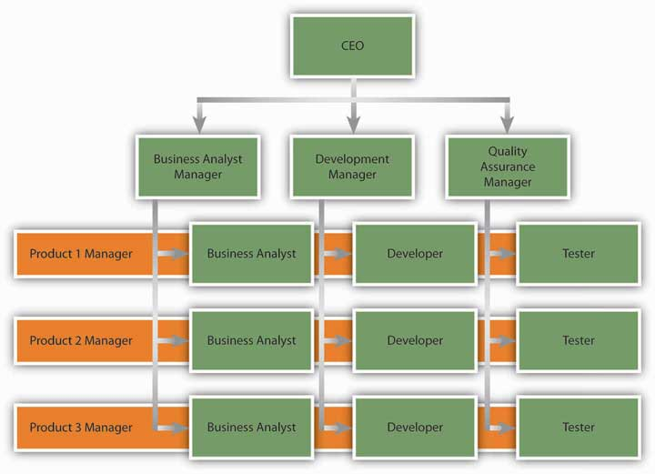

For centuries, technological advancements that affected business came in slow waves. Over 100 years passed between the invention of the first reliable steam engine and the first practical internal combustion engine. During these early days of advancement, communication would often go hand in hand with transportation. Instead of delivering mail hundreds of miles by horse, messages could be transported more quickly by train and then later by plane. Beginning in the 1900s, the tides of change began to rise much more quickly. From the telegraph to the telephone to the computer to the Internet, each advancement brought about a need for an organization’s structure to adapt and change.
Business has become global, moving into new economies and cultures. Previously nonexistent industries, such as those related to high technology, have demanded flexibility by organizations in ways never before seen. The diverse and complex nature of the current business environment has led to the emergence of several types of organizational structures. Beginning in the 1970s, management experts began to propose organizational designs that they believed were better adapted to the needs of the emerging business environment. Each structure has unique qualities to help businesses handle their particular environment.
Matrix organizationsOrganizations that cross a traditional functional structure with a product structure. Specifically, employees reporting to department managers are also pooled together to form project or product teams. have a design that combines a traditional functional structure with a product structure. Instead of completely switching from a product-based structure, a company may use a matrix structure to balance the benefits of product-based and traditional functional structures. Specifically, employees reporting to department managers are also pooled together to form project or product teams. As a result, each person reports to a department manager as well as a project or product manager. In a matrix structure, product managers have control and say over product-related matters, while department managers have authority over matters related to company policy. Matrix structures are created in response to uncertainty and dynamism of the environment and the need to give particular attention to specific products or projects. Using the matrix structure as opposed to product departments may increase communication and cooperation among departments because project managers will need to coordinate their actions with those of department managers. In fact, research shows that matrix structure increases the frequency of informal and formal communication within the organization.Joyce, W. F. (1986). Matrix organization: A social experiment. Academy of Management Journal, 29, 536–561. Matrix structures also have the benefit of providing quick responses to technical problems and customer demands. The existence of a project manager keeps the focus on the product or service provided.
Figure 7.8
An example of a matrix structure at a software development company. Business analysts, developers, and testers each report to a functional department manager and to a project manager simultaneously.
Despite these potential benefits, matrix structures are not without costs. In a matrix, each employee reports to two or more managers. This situation is ripe for conflict. Because multiple managers are in charge of guiding the behaviors of each employee, there may be power struggles or turf wars among managers. As managers are more interdependent compared to a traditional or product-based structure, they will need to spend more effort coordinating their work. From the employee’s perspective, there is potential for interpersonal conflict with team members as well as with leaders. The presence of multiple leaders may create role ambiguity or, worse, role conflict—being given instructions or objectives that cannot all be met because they are mutually exclusive. The necessity to work with a team consisting of employees with different functional backgrounds increases the potential for task conflict at work.Ford, R. C., & Randolph, W. A. (1992). Cross-functional structures: A review and integration of matrix organization and project management. Journal of Management, 18, 267–294. Solving these problems requires a great level of patience and proactivity on the part of the employee.
The matrix structure is used in many information technology companies engaged in software development. Sportswear manufacturer Nike is another company that uses the matrix organization successfully. New product introduction is a task shared by regional managers and product managers. While product managers are in charge of deciding how to launch a product, regional managers are allowed to make modifications based on the region.Anand, N., & Daft, R. L. (2007). What is the right organization design? Organizational Dynamics, 36(4), 329–344.
Boundaryless organizationAn organization that eliminates traditional barriers between departments as well as barriers between the organization and the external environment. is a term coined by Jack Welch during his tenure as CEO of GE; it refers to an organization that eliminates traditional barriers between departments as well as barriers between the organization and the external environment.Ashkenas, R., Ulrich, D., Jick, T., & Kerr, S. (1995). The Boundaryless organization: Breaking the chains of organizational structure. San Francisco: Jossey-Bass. Many different types of boundaryless organizations exist. One form is the modular organizationAn organization where all the nonessential functions are outsourced., in which all nonessential functions are outsourced. The idea behind this format is to retain only the value-generating and strategic functions in-house, while the rest of the operations are outsourced to many suppliers. An example of a company that does this is Toyota. By managing relationships with hundreds of suppliers, Toyota achieves efficiency and quality in its operations. Strategic alliancesA form of boundaryless design where two or more companies find an area of collaboration and combine their efforts to create a partnership that is beneficial for all parties. constitute another form of boundaryless design. In this form, similar to a joint venture, two or more companies find an area of collaboration and combine their efforts to create a partnership that is beneficial for both parties. In the process, the traditional boundaries between two competitors may be broken. As an example, Starbucks formed a highly successful partnership with PepsiCo to market its Frappuccino cold drinks. Starbucks has immediate brand-name recognition in this cold coffee drink, but its desire to capture shelf space in supermarkets required marketing savvy and experience that Starbucks did not possess at the time. By partnering with PepsiCo, Starbucks gained an important head start in the marketing and distribution of this product. Finally, boundaryless organizations may involve eliminating the barriers separating employees; these may be intangible barriers, such as traditional management layers, or actual physical barriers, such as walls between different departments. Structures such as self-managing teams create an environment where employees coordinate their efforts and change their own roles to suit the demands of the situation, as opposed to insisting that something is “not my job.”Dess, G. G., Rasheed, A. M. A., McLaughlin, K. J., & Priem, R. L. (1995). The new corporate architecture. Academy of Management Executive, 9(3), 7–18; Rosenbloom, B. (2003). Multi-channel marketing and the retail value chain. Thexis, 3, 23–26.
A learning organizationOne where acquiring knowledge and changing behavior as a result of the newly acquired knowledge is part of an organization’s design. is one whose design actively seeks to acquire knowledge and change behavior as a result of the newly acquired knowledge. In learning organizations, experimenting, learning new things, and reflecting on new knowledge are the norms. At the same time, there are many procedures and systems in place that facilitate learning at all organization levels.
In learning organizations, experimentation and testing potentially better operational methods are encouraged. This is true not only in response to environmental threats but also as a way of identifying future opportunities. 3M is one company that institutionalized experimenting with new ideas in the form of allowing each engineer to spend one day a week working on a personal project. At IBM, learning is encouraged by taking highly successful business managers and putting them in charge of emerging business opportunities (EBOs). IBM is a company that has no difficulty coming up with new ideas, as evidenced by the number of patents it holds. Yet commercializing these ideas has been a problem in the past because of an emphasis on short-term results. To change this situation, the company began experimenting with the idea of EBOs. By setting up a structure where failure is tolerated and risk taking is encouraged, the company took a big step toward becoming a learning organization.Deutschman, A. (2005, March). Building a better skunk works. Fast Company, 92, 68–73.
Learning organizations are also good at learning from experience—their own or a competitor’s. To learn from past mistakes, companies conduct a thorough analysis of them. Some companies choose to conduct formal retrospective meetings to analyze the challenges encountered and areas for improvement. To learn from others, these companies vigorously study competitors, market leaders in different industries, clients, and customers. By benchmarking against industry best practices, they constantly look for ways of improving their own operations. Learning organizations are also good at studying customer habits to generate ideas. For example, Xerox uses anthropologists to understand and gain insights to how customers are actually using their office products.Garvin, D. A. (1993, July/August). Building a learning organization. Harvard Business Review, 71(4), 78–91. By using these techniques, learning organizations facilitate innovation and make it easier to achieve organizational change.
The changing environment of organizations creates the need for newer forms of organizing. Matrix structures are a cross between functional and product-based divisional structures. They facilitate information flow and reduce response time to customers but have challenges because each employee reports to multiple managers. Boundaryless organizations blur the boundaries between departments or the boundaries between the focal organization and others in the environment. These organizations may take the form of a modular organization, strategic alliance, or self-managing teams. Learning organizations institutionalize experimentation and benchmarking.